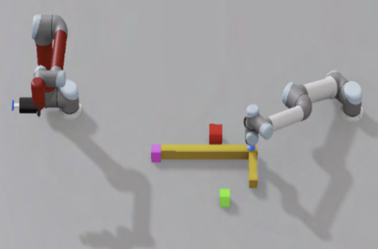
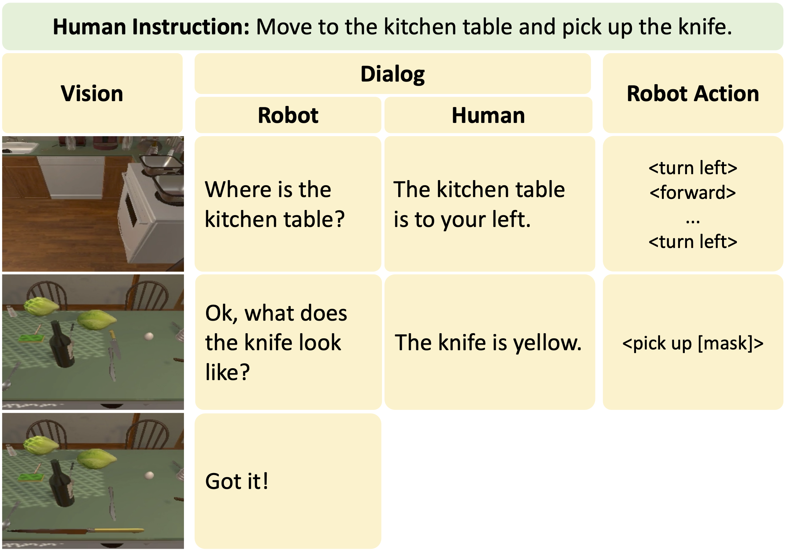
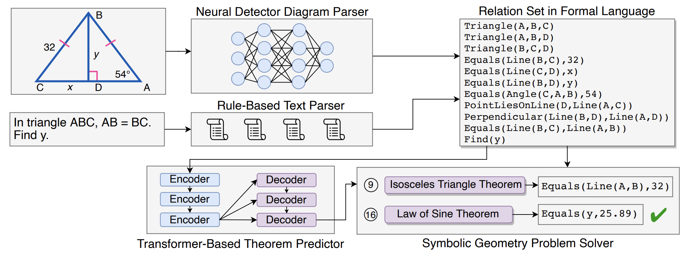
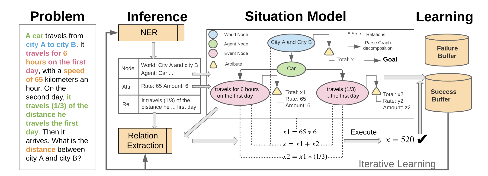
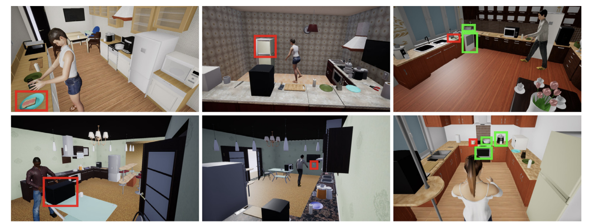
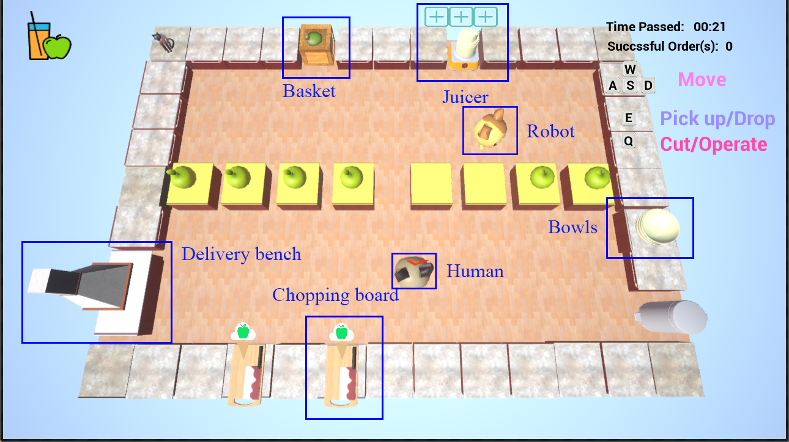

Publications
-
(* indicates equal contribution)
-
Complex manipulation tasks often require robots with complementary capabilities to collaborate. We introduce a benchmark for LanguagE-Conditioned Multi-robot MAnipulation (LEMMA) focused on task allocation and long-horizon object manipulation based on human language instructions in a tabletop setting. LEMMA features 8 types of procedurally generated tasks with varying degree of complexity, some of which require the robots to use tools and pass tools to each other. For each task, we provide 800 expert demonstrations and human instructions for training and evaluations. LEMMA poses greater challenges compared to existing benchmarks, as it requires the system to identify each manipulator's limitations and assign sub-tasks accordingly while also handling strong temporal dependencies in each task. To address these challenges, we propose a modular hierarchical planning approach as a baseline. Our results highlight the potential of LEMMA for developing future language-conditioned multi-robot systems.
@article{gong2023lemma, title={LEMMA: Learning Language-Conditioned Multi-Robot Manipulation}, author={Gong, Ran and Gao, Xiaofeng and Gao, Qiaozi and Shakiah, Suhaila and Thattai, Govind and Sukhatme, Gaurav S}, journal={arXiv preprint arXiv:2308.00937}, year={2023} } -

ARNOLD: A Benchmark for Language-Grounded Task Learning with Continuous States in Realistic Scenes
Ran Gong*, Jiangyong Huang*, Yizhou Zhao, Haoran Geng, Xiaofeng Gao , Qingyang Wu, Wensi Ai, Ziheng Zhou, Demetri Terzopoulos, Song-Chun Zhu, Baoxiong Jia, Siyuan Huang
Paper Website
International Conference on Computer Vision (ICCV), 2023Understanding the continuous states of objects is essential for task learning and planning in the real world. However, most existing task learning benchmarks assume discrete(e.g., binary) object goal states, which poses challenges for the learning of complex tasks and transferring learned policy from simulated environments to the real world. Furthermore, state discretization limits a robot's ability to follow human instructions based on the grounding of actions and states. To tackle these challenges, we present ARNOLD, a benchmark that evaluates language-grounded task learning with continuous states in realistic 3D scenes. ARNOLD is comprised of 8 language-conditioned tasks that involve understanding object states and learning policies for continuous goals. To promote language-instructed learning, we provide expert demonstrations with template-generated language descriptions. We assess task performance by utilizing the latest language-conditioned policy learning models. Our results indicate that current models for language-conditioned manipulations continue to experience significant challenges in novel goal-state generalizations, scene generalizations, and object generalizations. These findings highlight the need to develop new algorithms that address this gap and underscore the potential for further research in this area.@article{gong2023arnold, title={ARNOLD: A Benchmark for Language-Grounded Task Learning With Continuous States in Realistic 3D Scenes}, author={Gong, Ran and Huang, Jiangyong and Zhao, Yizhou and Geng, Haoran and Gao, Xiaofeng and Wu, Qingyang and Ai, Wensi and Zhou, Ziheng and Terzopoulos, Demetri and Zhu, Song-Chun and others}, journal={arXiv preprint arXiv:2304.04321}, year={2023} } -
Language-guided Embodied AI benchmarks requiring an agent to navigate an environment and manipulate objects typically allow one-way communication: the human user gives a natural language command to the agent, and the agent can only follow the command passively. We present DialFRED, a dialogue-enabled embodied instruction following benchmark based on the ALFRED benchmark. DialFRED allows an agent to actively ask questions to the human user; the additional information in the user's response is used by the agent to better complete its task. We release a human-annotated dataset with 53K task-relevant questions and answers and an oracle to answer questions. To solve DialFRED, we propose a questioner-performer framework wherein the questioner is pre-trained with the human-annotated data and fine-tuned with reinforcement learning. We make DialFRED publicly available and encourage researchers to propose and evaluate their solutions to building dialog-enabled embodied agents.
@article{gao2022dialfred, title={DialFRED: Dialogue-Enabled Agents for Embodied Instruction Following}, author={Gao, Xiaofeng and Gao, Qiaozi and Gong, Ran and Lin, Kaixiang and Thattai, Govind and Sukhatme, Gaurav S.}, journal={IEEE Robotics and Automation Letters}, year={2022}, volume={7}, number={4}, pages={10049-10056}, doi={10.1109/LRA.2022.3193254} } -
Geometry problem solving has attracted much attention in the NLP community recently. The task is challenging as it requires abstract problem understanding and symbolic reasoning with axiomatic knowledge. However, current datasets are either small in scale or not publicly available. Thus, we construct a new largescale benchmark, Geometry3K, consisting of 3,002 geometry problems with dense annotation in formal language. We further propose a novel geometry solving approach with formal language and symbolic reasoning, called Interpretable Geometry Problem Solver (InterGPS). Inter-GPS first parses the problem text and diagram into formal language automatically via rule-based text parsing and neural object detecting, respectively. Unlike implicit learning in existing methods, Inter-GPS incorporates theorem knowledge as conditional rules and performs symbolic reasoning step by step. Also, a theorem predictor is designed to infer the theorem application sequence fed to the symbolic solver for the more efficient and reasonable searching path. Extensive experiments on the Geometry3K and GEOS datasets demonstrate that Inter-GPS achieves significant improvements over existing methods
@inproceedings{lu2021inter, title={Inter-GPS: Interpretable Geometry Problem Solving with Formal Language and Symbolic Reasoning}, author={Lu, Pan and Gong, Ran and Jiang, Shibiao and Qiu, Liang and Huang, Siyuan and Liang, Xiaodan and Zhu, Song-Chun}, booktitle={The 59th Annual Meeting of the Association for Computational Linguistics (ACL)}, year={2021} } -
Solving algebra story problems remains a challenging task in artificial intelligence, which requires a detailed understanding of real-world situations and a strong mathematical reasoning capability. Previous neural solvers of math word problems directly translate problem texts into equations, lacking an explicit interpretation of the situations, and often fail to handle more sophisticated situations. To address such limits of neural solvers, we introduce the concept of a situation model, which originates from psychology studies to represent the mental states of humans in problem-solving, and propose SMART, which adopts attributed grammar as the representation of situation models for algebra story problems. Specifically, we first train an information extraction module to extract nodes, attributes, and relations from problem texts and then generate a parse graph based on a pre-defined attributed grammar. An iterative learning strategy is also proposed to improve the performance of SMART further. To rigorously study this task, we carefully curate a new dataset named ASP6.6k. Experimental results on ASP6.6k show that the proposed model outperforms all previous neural solvers by a large margin while preserving much better interpretability. To test these models' generalization capability, we also design an out-of-distribution (OOD) evaluation, in which problems are more complex than those in the training set. Our model exceeds state-of-the-art models by 17% in the OOD evaluation, demonstrating its superior generalization ability.
@inproceedings{hong2021smart, title={SMART: A Situation Model for Algebra Story Problems via Attributed Grammar}, author={Hong, Yining and Li, Qing and Gong, Ran and Ciao, Daniel and Huang, Siyuan and Zhu, Song-Chun.}, booktitle={The Thirty-Fifth AAAI Conference on Artificial Intelligence, {AAAI-21}}, year={2021} } -

Learning to Infer Human Attention in Daily Activities
Zhixiong Nan, Tianmin Shu, Ran Gong, Shu Wang, Ping Wei, Song-Chun Zhu, Nanning Zheng
PDF
Pattern Recognition 2020The first attention model in the computer science community is proposed in 1998. In the following years, human attention has been intensively studied. However, these studies mainly refer human attention as the image regions that draw the attention of a human (outside the image) who is looking at the image. In this paper, we infer the attention of a human inside a third-person view video where the human is doing a task, and define human attention as attentional objects that coincide with the task the human is doing. To infer human attention, we propose a deep neural network model that fuses both low-level human pose cue and high-level task encoding cue. Due to the lack of appropriate public datasets for studying this problem, we newly collect a video dataset in complex Virtual-Reality (VR) scenes. In the experiments, we widely compare our method with three other methods on this VR dataset. In addition, we re-annotate a public real dataset and conduct the extensional experiments on this real dataset. The experiment results validate the effectiveness of our method@article{nan2020learning, title={Learning to infer human attention in daily activities}, author={Nan, Zhixiong and Shu, Tianmin and Gong, Ran and Wang, Shu and Wei, Ping and Zhu, Song-Chun and Zheng, Nanning}, journal={Pattern Recognition}, volume={103}, pages={107314}, year={2020}, publisher={Elsevier} } } -

Joint Mind Modeling for Explanation Generation in Complex Human-Robot Collaborative Tasks
Xiaofeng Gao* , Ran Gong*, Yizhou Zhao, Shu Wang, Tianmin Shu, Song-Chun Zhu
PDF Website Talk Slides
IEEE International Conference on Robot & Human Interactive Communication (RO-MAN), 2020Human collaborators can effectively communicate with their partners to finish a common task by inferring each other's mental states (e.g., goals, beliefs, and desires). Such mind-aware communication minimizes the discrepancy among collaborators' mental states, and is crucial to the success in human ad-hoc teaming. We believe that robots collaborating with human users should demonstrate similar pedagogic behavior. Thus, in this paper, we propose a novel explainable AI (XAI) framework for achieving human-like communication in human-robot collaborations, where the robot builds a hierarchical mind model of the human user and generates explanations of its own mind as a form of communications based on its online Bayesian inference of the user's mental state. To evaluate our framework, we conduct a user study on a real-time human-robot cooking task. Experimental results show that the generated explanations of our approach significantly improves the collaboration performance and user perception of the robot.@inproceedings{gao2020joint, title={Joint Mind Modeling for Explanation Generation in Complex Human-Robot Collaborative Tasks}, author={Gao, Xiaofeng and Gong, Ran and Zhao, Yizhou and Wang, Shu and Shu, Tianmin and Zhu, Song-Chun}, booktitle={2020 29th IEEE International Conference on Robot and Human Interactive Communication (RO-MAN)}, pages={1119--1126}, year={2020}, organization={IEEE} } -
VRKitchen: an Interactive 3D Environment for Learning Real Life Cooking Tasks
Xiaofeng Gao , Ran Gong , Tianmin Shu, Xu Xie, Shu Wang, Song-Chun Zhu
PDF Website
ICML workshop on Reinforcement Learning for Real Life, 2019One of the main challenges of applying reinforcement learning to real world applications is the lack of realistic and standardized environments for training and testing AI agents. In this work, we design and implement a virtual reality (VR) system, VRKitchen, with integrated functions which i) enable embodied agents to perform real life cooking tasks involving a wide range of object manipulations and state changes, and ii) allow human teachers to provide demonstrations for training agents. We also provide standardized evaluation benchmarks and data collection tools to facilitate a broad use in research on learning real life tasks. Video demos, code, and data will be available on the project website: sites.google.com/view/vr-kitchen.@article{gao2019vrkitchen, title={Vrkitchen: an interactive 3d virtual environment for task-oriented learning}, author={Gao, Xiaofeng and Gong, Ran and Shu, Tianmin and Xie, Xu and Wang, Shu and Zhu, Song-Chun}, journal={arXiv preprint arXiv:1903.05757}, year={2019} }